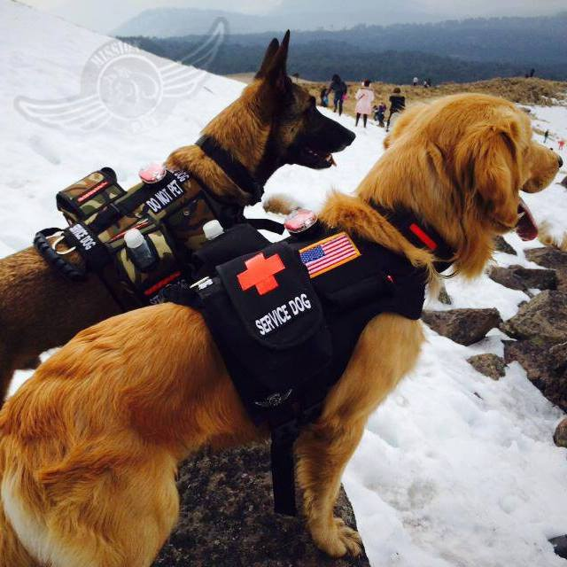

The Americans with Disabilities Act (ADA) was signed into law in 1990 by President George H.W. Bush. A revised version was amended in 2010, adding service dogs into the protection. This piece of legislation is considered one of the largest pieces of civil rights legislation passed. The ADA is designed to allow individuals with disabilities a chance at a normal life in society.
Service animals are defined as dogs that are individually trained to do work or perform tasks for people with disabilities. 
According to the national government:
Examples of such work or tasks include guiding people who are blind, alerting people who are deaf, pulling a wheelchair, alerting and protecting a person who is having a seizure, reminding a person with mental illness to take prescribed medications, calming a person with Post Traumatic Stress Disorder (PTSD) during an anxiety attack, or performing other duties. Service animals are working animals, not pets. The work or task a dog has been trained to provide must be directly related to the person’s disability. Dogs whose sole function is to provide comfort or emotional support do not qualify as service animals under the ADA.
For more information, please visit: https://www.ada.gov/ada_intro.htm